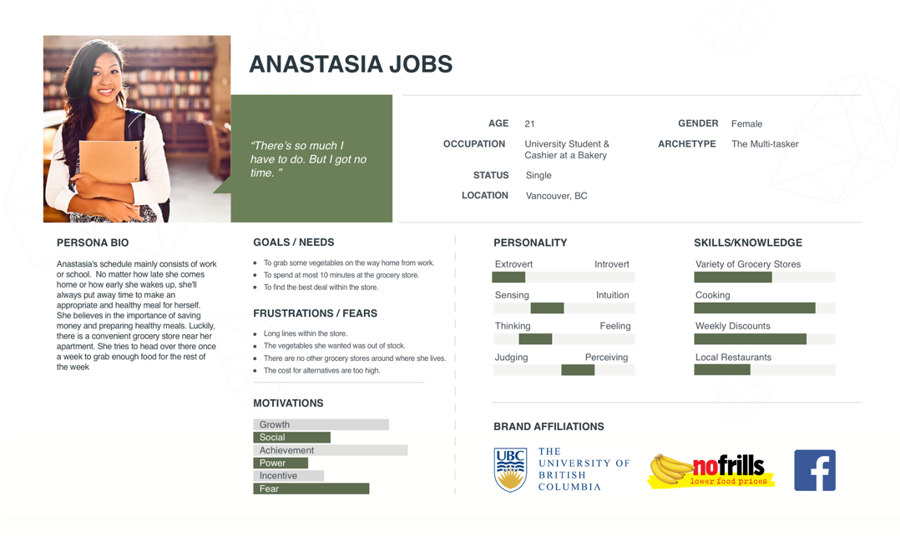

A responsive website for a convenient online grocery shopping store.
Target User
University students who don’t have the time to purchase fresh groceries from the grocery store due to juggling part-time jobs, heavy school work load and extracurricular activities.
Goal
To create an efficient, convenient and effortless online grocery shopping experience for university students to find prices that are suitable for them as well as to keep track for their shopping habits.
My Role
User Experience Designer, Visual Designer
Summary
Through my research, many university students found it extremely hard to go grocery shopping while attending full-time classes and working part-time.
Being both frugal and a lover of convenience, it was nearly impossible for students to not only find time to look for discounts, but also travel miles to purchase specific grocery items.
With this in mind, I have designed an online grocery store that reduces stress and brings effortless thinking in purchasing grocery items for university students as they can focus on the more important things in their lives.
-- Process --
Research
Before jumping in and starting to create what I think is the “right” online grocery store, it was important to understand their grocery shopping experience, the goods and the bads, the pleasant and the not-so-pleasant experiences. So, to conduct my research, I decided to interview 3 people who have had experience at the grocery store. I dug deep into their reasons of the grocery shopping trip and if their expectations were satisfied or not.
Because all of my user interviewees were university students, I’ve decided to shift my focus from creating an online grocery store for the general public, to encouraging university students to use an online grocery store.
Through the user interviews, I have found that all the interviewees place an emphasis on purchasing discounted goods and being able to find what they need right away. Their main goal is to emphasize products/goods that are on sale without having to search for them.
"
I wouldn’t want to go to another grocery store because that [store] is the cheapest around my neighbourhood.
"
I got other things I’d rather do.
Strategy
After conducting several interviews, I started brainstorming a list of problems that the user would want to solve. Then, from the list of problems, I started coming up with features that would solve these user problems. This became a feature matrix, where I highlighted the must-have features and placed each feature on a specific priority level.
After collecting numerous amounts of features, and pinpointing the ones with the highest priority, it helped me in creating my persona: Anastasia, the busy university student.
Anastasia is a young, busy student who finishes school and heads over to her part-time work right away. She values eating healthy and saving up to pay off her student loans. However, because she is constantly on the run, she only has time to purchase fresh ingredients once a week, which means her grocery items aren’t as fresh by the end of the week. Not only that, she barely has time to check up on weekly deals.
To fully understand Ana’s personality, an empathy map was created. As a busy student, Ana experiences a lot stress and frustration knowing that her term project is due the next day after finishing a 5 hour shift and now rushing to the grocery store to make sure it isn’t closed by the time she gets there. There are lots of things on her mind. That’s why she doesn’t remember any weekly deals or previous purchases she had made.
In order to get a better sense of how Ana interacts and feels when she is on a trip at the grocery store, I’ve decided to create a Customer Journey Map. I placed myself in Ana’s shoes from she realizes she has no more vegetables in her fridge to when she shares with her friends about her dinner meal.
I’ve included her journey, the thoughts she has when doing a specific task, the environment she’s in, the different users she interacts with, her expectations as well as her positive and negative emotional experience.
Using the customer journey map, a user flowchart was mapped out for Anastasia.
I’ve included her journey, the thoughts she has when doing a specific task, the environment she’s in, the different users she interacts with, her expectations as well as her positive and negative emotional experience.
Interaction Design
Wireframes were then built in Sketch for the screens necessary to complete the userflow up to the “Add to Cart”.
The wireframes were used to create a prototype with InVision for usability testing. The tests were conducted remotely with four users.
The users were given a task to complete: Add 3 meat items to cart. The testers were encouraged to speak their thoughts whilst completing the task, as their actions and voices were recorded for future analysis and reference.
"
I didn’t expect the categories to be located in [the filter category].
"
The hardest part was not being able to search for the item.
"
What does “Add More Filters” mean?
To further understand my target user group, I ran a click and preference test on Verify.
For the click test, the task was to “Locate the area where the user would click to find a pack of ground beef”. Through this test, I have realized that all 16 testers didn’t click the correct spot, which was the “Add More Filters” drop down menu. This means that this design must be improved.
As for the preference test, I have asked the testers to choose which location they’d rather have the price tag. From the responses, 80% of the testers prefer to have the price tag above the quantity selection.
Interaction Design
The brand was created for ShopFresh is one that represents freshness, quality, and cleanliness.
A vibrant green was chosen as the primary colour for the logo to represent the three values. The arrow represents quick service, while the circle outside of the house shape depicts “outside the store” or online.
The final versions were created based on the feedback from the usability tests. Improvements were also made using the style tile as a reference for Shopfresh.

-- Reflection --
Building ShopFresh was challenging as the target user was similar to myself - the busy university student. I had to continuously remind myself to focus on what my interviewees’ experiences instead of personal experiences. Working on this project reminded me the importance of making it user-friendly instead of me-friendly.
Revisiting the whole project again, it would’ve been nice to add more screens to both desktop and mobile versions to fully capture the userflow.
Working on ShopFresh was an experience that was not only valuable but also, it allowed me to go in-depth and fully understand the lengthy process of purchasing products. I wouldn’t have known of the details that goes in to a simple purchase on a e-commerce website if it wasn’t for this project.